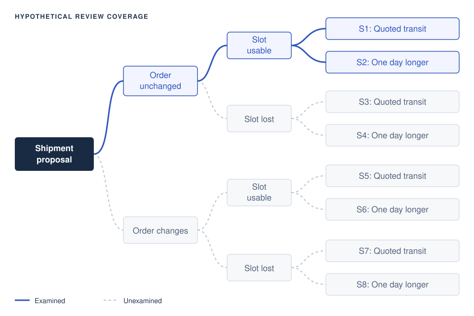
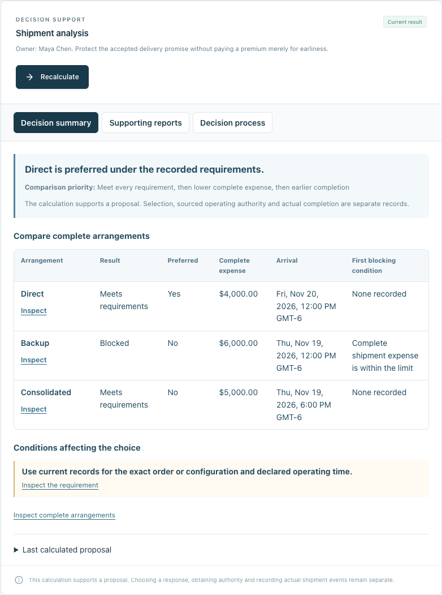

“Plans are worthless, but planning is everything.” Dwight D. Eisenhower used those words in November 1957 while explaining preparation for emergencies. Events would differ from the anticipated situation; the understanding developed through planning would help people respond intelligently. He introduced the phrase as a saying he had heard in the Army.1
That observation gives us a practical business question: what should planning preserve beyond the instructions in a plan? A proposal can name every person, service, and date while leaving its feasibility, comparative value, or acceptance unresolved. Those are different claims.
We can expose them with a short decision statement. Each named slot identifies information to supply, a conclusion to establish, or a decision to record:
This plan includes
plan_contents.
We have checked it under these conditions:assessed_conditions.
The result establishesestablished_finding.
We favorpreferred_optionsbecausepreference_basis.
Acceptance ofnext_actionisacceptance_status, withdecision_ownerresponsible.
If we observereassessment_trigger, we willcontingency_responsebeforeresponse_deadline.
Some entries describe choices and assumptions. Others report assessment results or human decisions. “Not established” and “pending” can be correct entries. Completing the wording is not proof that the proposed work can proceed.
What does the shipment proposal include?
Consider a fictional supplier preparing a retailer’s product launch. Maya coordinates its shipment recommendation. Launch wants the goods early, finance has set a $5,000 expense limit, and operations needs records and resources that support the actual shipment. A revised purchase order has changed the document specifying the goods and delivery requirements.
Follow her team in The purchase orders changed. Which shipment recommendations need review again? The walkthrough shows how revised orders, freight quotes, and confirmation records become an exception report that tells Maya which cases need her attention.
Start with her earlier, ample-window case, before the order change. Maya has three quoted services and current supporting records. The updated review prefers the lowest complete expense among arrangements that meet every requirement, then earlier arrival. Each quote also has its own booking cutoff; a low price cannot keep a closed offer available.
| Service | Expense | Quoted arrival | Current issue |
|---|---|---|---|
| Direct | $4,000 | Friday, noon | Supported in the ample-window case; booking closes at 11 a.m. |
| Consolidated | $5,000 | Thursday, 6 p.m. | Current loading confirmation; booking remains open until noon. |
| Backup | $6,000 | Thursday, noon | Expense exceeds the $5,000 limit. |
A loading confirmation identifies the reserved loading opportunity and the order it covers. An order change can make that scope outdated: a confirmation for the previous revision does not establish the required support for the revised order.
Completeness asks whether the required choices have been resolved. A complete shipment plan must connect the service to preparation, people, resources, and timing. We call this combination an arrangement; it supplies plan_contents. “Someone will prepare the goods” leaves a responsibility open. Naming a person and a time resolves the choice, even if that person later turns out to be unavailable.
Completeness is relative to the commitment being modeled. If the job includes preparation, transport, and receipt, selecting a carrier alone cannot cover it. An assessment uses a model: the specified choices, facts, and rules it will examine. An obligation omitted from that description remains outside the result.
Can the proposed choices work together?
Feasibility asks whether the choices jointly satisfy the applicable requirements under the supplied conditions. An earlier arrival does not compensate for exceeding a mandatory expense limit. A document’s presence does not make its scope current.
In the ample-window case, Direct and Consolidated pass; Backup is too expensive. Each passing, complete plan provides a feasible witness: concrete support that at least one arrangement meets the modeled requirements. The established_finding should remain attached to the assessed_conditions that support it.
The revised-order exception is different. In that supplied case, Direct lacks the required capacity and Consolidated’s confirmation covers the earlier order revision. No arrangement passes. Maya needs current supporting records or an escalation, rather than a recommendation carried forward from the earlier case.
This is a bounded conclusion. People still need to judge whether the model fits the operation and whether the records are trustworthy. Feasibility under stated inputs is not an unconditional forecast of successful delivery.
Which possible conditions did we examine?
A contingency is a possible condition or event that could affect the next action. To illustrate coverage, extend the shipment situation with three uncertain conditions: another order change, loss of the loading window, and transit taking one day longer than quoted. If all combinations are admitted, there are eight modeled futures. The field names are order_change, loading_window_status, and transit_duration.
Figure 1 highlights two futures examined by a hypothetical narrow review. These branches concern conditions Maya may face; they are not service choices she can select. Choosing a carrier does not choose whether the customer changes the order again.
Even if a plan passes both examined futures, the other six remain unresolved. They are not thereby impossible or failed. Two of eight examined scenarios is also not a 25 percent success probability.
Examining all eight would answer the chosen model’s questions. It would not show that the real operation contains only those three relevant conditions. A new receiving restriction or an unavailable worker could require a different model. This is a practical argument for continuing to plan, not a theorem that every plan must fail.
Information entropy can quantify uncertainty over a specified set of outcomes when their probabilities are justified. It does not establish that the set is exhaustive. A robust arrangement may succeed across many modeled futures while their occurrence remains uncertain. Examining vulnerabilities across plausible futures is central to robust decision making.2

Why favor one feasible arrangement?
Return to the ample-window case, where Direct and Consolidated both have current support and remain bookable. The cost-first rule prefers Direct at $4,000 because both meet the delivery commitment. The extra $1,000 needs an operating reason.


Now assess that case at 11:30 a.m. Direct’s 11 a.m. booking cutoff has passed. Consolidated remains bookable until noon and has current supporting records, so its $5,000 complete arrangement becomes preferred. Backup remains over budget. Passing time has changed the available choice even without a new freight price.
See these distinct situations in Resolve a shipment exception with the Decision Lab SDK. Follow the same portable review from the CLI into Maya’s desk, inspect what changed, and see how the team records its chosen response and the resulting operating evidence.
Established preference supports a comparison under explicit criteria. The preferred_options now names Consolidated; preference_basis retains the cost-first policy, current time, booking windows and supporting records. Finance can inspect why the premium is now needed to protect the commitment. A different feasible set or an explicitly different business priority could support another preference.
Several alternatives may also tie under the declared rule. Keeping all preferred ties is a valid result. A tie differs from a comparison that remains unresolved; silently displaying one tied option as the sole winner invents a distinction.
Completion of a command, assessment, or report remains a separate issue:
| Assessment outcome | Complete? | Witness? | Preference? |
|---|---|---|---|
| All required evaluation finishes; no plan passes | Yes | No | No |
| Limited search finds a fully checked passing plan | No | Yes | No |
| Complete comparison establishes a valid preferred tie | Yes | Yes | Yes |
Finding a witness need not require examining every candidate. Establishing that none works, or that one is best, needs the relevant coverage or another sound proof or bound. Input diagnostics, unavailable calculations, and completed blocked findings therefore call for different responses. A fully retained report is not itself proof of feasibility or preference.
Who has agreed to the next action?
Human acceptance records a responsible person’s decision about a particular action and proposal. Existing permissions may already be modeled requirements. The separate question is whether the responsible person has accepted this next commitment under the reviewed conditions.
For example, next_action could be “reserve Consolidated for the revised order.” Its acceptance_status may remain pending while the authorized decision_owner reviews it. A useful record preserves the proposal, reviewed basis, person, action, and conditions. Acceptance does not establish that the reservation or delivery has actually occurred.
The same distinctions apply to a second fictional operation. Leah coordinates 120 gift kits whose printed code must lead recipients to a usable online checkout. Within a $600 correction limit and an ample one-day window, complete in-house correction costs $300 and finishes at minute 40. Confirmed external work costs $400 and takes 25 minutes. The cost-first review prefers in-house work.
In an urgent campaign assessed at minute 1,410, only 30 minutes remain before the original minute-1,440 cutoff. In-house work would finish at 1,450; confirmed external work finishes at 1,435. Here the additional $100 protects the cutoff. In Build a gift-kit app with the Decision Lab SDK, follow that review through the chosen package, sourced authorization, actual correction, fresh rehearsal and handoff records.
A missing booking or one covering an older insert can leave the urgent campaign without a passing package. At minute 1,420, even the 25-minute package misses the original cutoff. A completed review exposes the need to escalate or revise the promise; extending the proposed deadline does not establish that the original promise was met.
A day to prepare. Which gift-kit campaigns need attention? shows how the team finds that blocked campaign among its other work. Read it to see how a campaign screening report separates supported proposals, blocked campaigns, and input problems, then hands one flagged case to the person who must resolve it.
Put the distinctions to work
Decision Lab represents alternatives, checks their modeled requirements, and compares passing arrangements under specified preference rules. These shipment and gifting walkthroughs connect command-line screening to SDK applications through the same portable workflow. Supplied inputs, calculated findings, an operating choice and sourced external authority remain distinct parts of the record.
The operating workflow also checks what the supplied records establish about completion. A reservation does not prove delivery; planned rehearsal time does not prove a successful test. A later cancellation or failed rehearsal supersedes the earlier positive record while preserving it in history. People and their connected systems still authenticate sources and perform the work.
The public examples distinguish assessment completion, feasible witnesses, established preferences, limited searches, and genuine ties. They do not compute the entropy estimates developed in the next article. Their independent shipment and campaign cases also do not establish a feasible allocation of shared trucks, workers, or budgets.
Return to the opening statement before acting. What supports each entry? Which change reopens it? Does the proposed response have the time, resources, and authority it needs? Those questions give the team a basis for continuing when the situation changes.
Next: How Much Uncertainty Is Left? develops a scoped numerical estimate and compares perfect and imperfect observations. Article 3 examines whether learning, control, or a robust response actually improves the commitment.